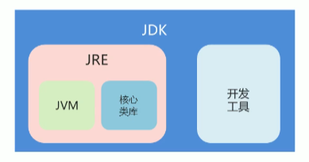
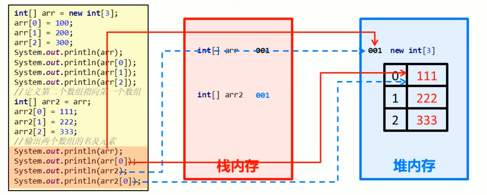
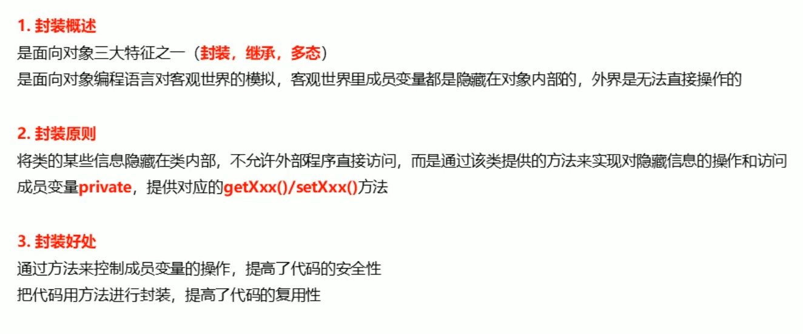
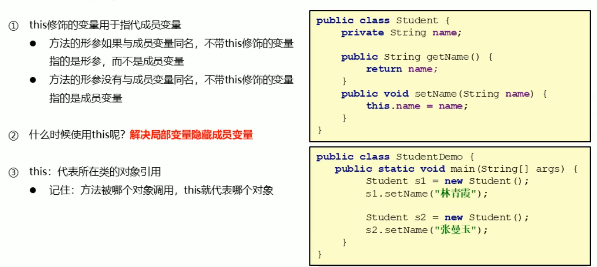
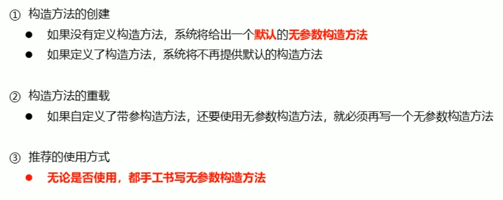
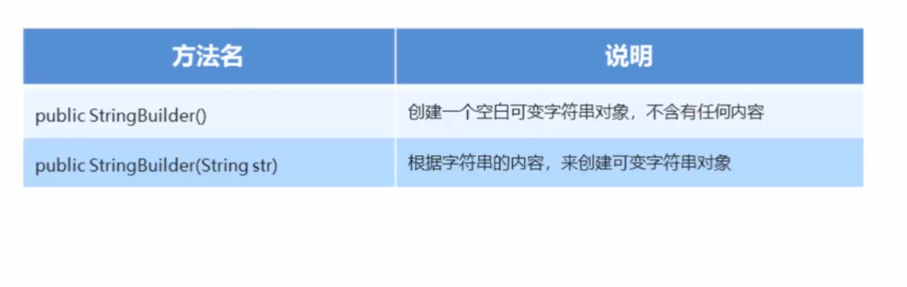
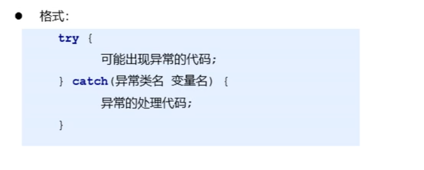

Java语言发展史
Java语言
语言：人与人交流沟通的表达方式
计算机语言：人与计算机之间进行信息交流沟通的一种特殊语言
Java是美国公司Sun（Stanford University Network）与1995年推出的计算机语言
Java之父： 詹姆斯高斯林
Java跨平台原理
平台：操作系统（如Windows，Macos，Linux）
Java程序可以在任何操作系统上运行
原理：JVM（各平台有对应版本JVM（即Java Virtual Machine–Java虚拟机），保证程序的正常运行
JRE与JDK
JRE（Java Runtime Environment）：Java程序运行时的环境，包含JVM和运行时所需的核心类库
JDK（Java Development Kit)：Java程序开发工具（编译工具javac.exe+运行工具java.exe）包，包含JRE和开发人员使用的工具 ==开发Java程序必备==

简单编译与运行
NotePad++打开，写入代码，保存，在控制台先使用javac编译文件，再使用java命令执行文件
基础语法
1.注释
单行注释 格式：
1
//这是一个注释
多行注释 格式：
1
/*这也是一个注释*/
文档注释 格式：
1
/**这还是一个注释*/
2.关键字
特点：字母全为小写，在常用的代码编辑器中常有特殊的颜色标记，被高亮显示，非常直观
1 | public class HelloWorld{ |
3.常量
| 常量类型 | 说明 | 举例 |
|---|---|---|
| 字符串常量 | 用双引号括起来的内容 | “Hello World” |
| 整数常量 | 整数，不是小数 | 123, 456 |
| 小数常量 | 小数，不是整数 | 12.3, 4.56 |
| 字符常量 | 用单引号括起来的内容 | ‘’A’, ‘a’, ‘1’, ‘一’’ |
| 布尔常量 | 布尔值，表示真假 | 有且仅有：true, false |
| 空常量 | 一个特殊的值，空值 | 值: null |
4.数据类型
计算机存储设备（无论内存还是硬盘）的最小信息单元叫“位（bit）”，常用小写 “b” 表示。
计算机中最小的存储单元叫“字节（byte）”，常用大写 ”B“ 表示，一个字节由连续的8个位组成
常见的存储单位与其转换
- 1B = 8bit
- 1KB = 1024B
- 1MB = 1024KB
- 1 GB = 1024MB
- 1 TB = 1024 GB
java语言是强类型语言，对于每一种数据都给出了明确的数据类型，不同的数据类型也分配了不同的内存空间，不同的数据类型表示的数据大小是不一样的。
5.变量
概述：在程序运行过程中，值可以发生改变的量（本质：内存中的一小块区域）
定义格式： ==数据类型 变量名 = 变量值==
使用： 变量名等于变量值 如：
1 | int a = 20; |
修改： ==变量名 = 想要修改为的变量值== 如：
1 | int a = 20; |
注意事项
1.不使用重复的名字声明变量
2.使用变量前需给变量赋值
3.定义特殊变量使用特殊方法（如： long类型定义时为了防止整数过大，后面要加L
float类型定义时为了防止类型不兼容，后面要加F）
6.标识符
- 由数字，字母，下划线（”_”)，美元符号(“$”)组成
- 不能以数字开头
- 不能是关键字
- 严格区分大小写
标识符的常见命名方法（即驼峰命名法）
小驼峰：常用于 方法及变量
约定1：标识符是一个单词的时候，首字母小写
范例1： ==name==
约定2：标识符由多个单词组成的时候，第一个单词首字母小写，其他单词首字母大写
范例2： ==firstName==
大驼峰： 常用语 类
约定1： 标识符是一个单词的时候，首字母大写
范例1： ==Student==
约定2： 标识符由多个单词组成的时候，每个单词的首字母大写
范例2： ==GoodStudent==
7.类型转换
自动类型转换：把一个数据范围小的数值或者变量赋值给另一个表示数据范围大的变量
强制类型转换（不建议用）：把一个表示数据范围大的数值或者变量赋值给另一个表示数据范围小的变量
格式： ==目标数据类型 变量名 = （目标数据类型）值/变量==
范例： int k = (int)88.88
算术运算符
- 运算符：对常量或者变量进行操作的符号
- 表达式：用运算符把常量或者变量连接起来符合java语法的式子
- 不同运算符连接的表达式体现的是不同类型的表达式
字符的”+”操作：拿字符在计算机底层对应的数值来进行计算
==算术表达式中包含多个数据类型的值的时候，整个算术表达式的类型会自动进行提升==
提升规则：
byte类型，short类型和char类型将被提升到int型
整个表达式的类型自动提升到表达式中最高等级操作数同样的类型
登记顺序： byte,short,char -> int -> long -> float -> double
字符串的”+”操作：当”+”操作中出现字符串时，此时的”+”为字符串连接符，而不是算术运算符
赋值运算符
==注意事项==：扩展的赋值运算符隐含了强制类型转换（建议使用来避免忘记强转的尴尬）
自增自减运算符
==a++（a加之前） a–（a减之前） ++a（a加之后） –a（a减之后）==
关系运算符
==boolean,not bool!==
逻辑运算符
==短路==逻辑运算符

==短路逻辑运算符的使用更为常见，也更方便快捷==
1
三元运算符
==（具有缩短代码长度的好处的同时，也会不可避免地降低代码的可读性）==
数据的输入–使用Scanner输入数据
程序的基本结构（略，后会补）
Random的作用和使用步骤
IDEA中的项目与包与模块（略，后会补）
数组（一次性声明大量的用于存储数据的变量）
（一般用于存储同类型变量）
==定义格式==
数组的初始化（为数组中的数组元素分配内存空间，并为每个数组元素赋值）
1.动态初始化
2.静态初始化
==单个数组内存图==
==多个数组内存图==
==多个数组指向相同内存图==

数组的一些操作（略，后会补）
方法
1.什么是方法？
==方法的通用格式==
注意事项： 1.void类型的方法，可以直接调用
2.非void类型的方法，推荐用对应类型变量接收调用
==方法的定义==
注意事项：1.不可嵌套定义
2.void方法无返回值，可以省略，也可单独书写return
==方法的调用==
==方法调用过程图解==
注意事项： 对于引用类型的参数，形式参数的改变，影响实际参数的值
2.带参数的方法
==定义带参数的方法==
==调用带参数的方法==
3.==形参与实参==
4.==方法重载==
案例
什么是方法重载
方法重载的特点

==面向对象==
类和对象
==类是对象的抽象，对象是类的实体==
1.对象：万物皆对象，客观存在的事物皆为对象
对象的属性： 对象具有的各种特征，每个对象的每个属性都拥有特定的值
对象的行为： 对象能够执行的操作
2.类： 对现实生活中一类具有共同属性和行为的事物的
类的特点： 1.类是对象的数据类型
2.类是具有相同属性和行为的一组对象的集合
类
类的定义
类的定义步骤
案例
对象
创建对象与使用对象
封装
封装概述&封装原则&封装的好处

权限修饰符之private关键字
this关键字

构造方法

==构造方法的注意事项==

标准类的制作
String类
String概述
String构造方法
String对象的特点
字符串的比较
String中的一些方法
StringBuilder
StringBuilder构造方法

StringBuilder的添加和反转方法
==注意事项==：append方法返回的是对象本身，即可通过返回值这个对象继续调用方法，如：
1 | StringBuilder sb = new StringBuilder(); |
StringBuilder与String的相互转换
==Java的集合类之ArrayLIst==
集合概述
ArrayList的构造方法和添加方法
ArrayList集合的常用方法
==add方法==：可在指定位置插入元素，原位置元素及之后的元素依次向后移位，如：
1 | ArrayList<Array> array = new ArrayList<>(); |
==注意事项==：重视索引越界问题
==继承==
继承概述
继承子类的特点
==继承的好处与弊端==
继承中变量的访问特点
super关键字
继承中构造方法的访问特点
继承中成员方法的访问特点
==方法的重写==
1 |
|
==注意事项==：1.私有方法不能被重写（父类私有成员子类是不能继承的）
2.子类方法访问权限不能更低（public > 默认 > 私有）
包 _package
包的概述和使用
导包的概述和使用 (开发软件一般有自动导包功能，会优化包的导入，更加智能快捷，建议开启)
==权限修饰符==
==状态修饰符之final==
关于fianl修饰局部变量
==注意事项==： 1.变量是基本类型，final修饰指的是基本类型的数据值不能发生改变
2.变量是引用类型，final修饰指的是引用类型的地址值不能发生改变，但是地址里面的内容是可以 发生改变的
==状态修饰符之static==
static修饰的特点
static访问特点
==总结==： 静态成员方法智能访问静态成员
==多态==
多态概述
==多态中成员访问特点==
==用途==： 创建的对象为父类的属性，使用子类的方法
多态的好处与弊端
多态的好处：提高了程序的扩展性
具体体现： 定义方法的时候，使用父类型作为参数，将来在使用时，使用具体的子类型参与操作
多态的弊端： 不能使用子类的特有功能（即方法）
==多态中的转型==（解决多态的弊端）
向上转型： 从子到父 父类引用指向子类对象
向下转型： 从父到子 父类引用转为子类对象 （==实现使用子类特有功能==）
==注意事项==： 谨防类型转换异常（ClassCastException ）
1 | public class AnimalDemo{ |
抽象类
抽象类概述：
在Java中，一个没有方法体的方法应该定义为抽象方法，而类中如果有抽象方法，该类必须定义为抽象类
（==换言之，抽象类中不一定有抽象方法，但是，类中只有抽象类才能容纳抽象方法==）
抽象类的特点：
抽象类的成员的特点：
接口
接口概述：
接口就是一种公共的规范标准，只要符合规范标准，大家都可以调用
==Java中的接口更多的体现在对行为的抽象==
接口特点：
==注意事项： 无论是抽象类还是接口，最终里面的抽象方法都必须被重写==
接口的成员特点：
==所有类的最终的父亲都是Object类（此类继承也常见于Java的其他地方，如数据类型）==
==类和接口的关系==
类和类的关系
继承关系，只能单继承，但是可以多层继承
1 | public class GrandFather{...}; |
类和接口的关系
实现关系，可以单实现，也可以多实现，还可以在继承一个类的同时实现多个接口
1 | public class InterImpl extends Object implements Inter1,Inter2, ... ,Intern{...}; |
接口和接口的关系
继承关系，可以单继承，也可以多继承
1 | public interface Inter1 extends Inter2,Inter3, ... ,Intern{...}; |
==抽象类和接口的区别==
- 成员区别
- 抽象类 变量，常量： 有构造方法，有抽象方法，也有非抽象方法
- 接口类 常量： 抽象方法
- 关系区别
- 类与类 继承，单继承
- 类与接口 实现，可以单实现，也可以多实现
- 接口与接口 继承，单继承，多继承
- 设计理念区别
- 抽象类 ==对类抽象==，包括属性，行为
- 接口 ==对行为抽象==，主要是行为
作为形参和返回值（==透过现象看本质==）
类名作为形参和返回值
- 方法的形参是类名，其实需要的是该类的对象
- 方法的返回值是类名，其实返回的是该类的对象
抽象类名作为形参和返回值
- 方法的形参是抽象类名，其实需要的是该抽象类的子类对象
- 方法的返回值是抽象类名，其实返回的是该抽象类的子类对象
接口名作为形参和返回值
- 方法的形参是接口名，其实需要的是该接口的实现类对象
- 方法的返回值是接口名，其实返回的是该接口的实现类对象
==总结==：创建==对应的对象==，==使用对应的方法==
内部类
内部类概述：在一个类中定义一个类。如：在类A内部定义以一个类B，类B就被成为内部类
内部类的访问特点：
- 内部类可以直接访问外部类的成员，包括私有
- 外部类要访问内部类的成员，必须创建对象
根据内部类在类中定义的位置不同，可以分为如下两种形式
- 在类的成员位置：成员内部类
- 在类的局部位置：局部内部类 ==（在类的方法里面）==
成员内部类
对象的创建与使用
- 格式：外部类名.内部类名 对象 = 外部类对象.内部类对象
- 范例：Outer.Inner oi = new Outer().new Inner(); (不常用)
==如内部类改用用private而非public修饰（如下），则以上案例会失效==
==但常用下述方法，即通过调用method方法，在method方法中建立内部类Inner的对象，调用内部类Inner的方法，再在测试类中通过调用method方法间接调用内部类中的方法==
1 | public class Outer { |
局部内部类
局部内部类是在方法中定义的类，所以外界是无法直接使用的，==需要在方法内部创建对象并使用==
==该类可以直接访问外部类的对象，也可以访问方法内的局部变量==
匿名内部类
前提：存在一个类或者接口（这里的类可以使具体类也可以是抽象类）
==本质==：一个继承了该类或者实现了该接口的子类匿名==对象==
1 | public class Outer { |
==多次调用，不用复制！！！==
对象类型Inter，在里面重写了show方法，整体为Inter的实现类对象，可以以多态的形式赋值给Inter接口，具体方法如下！（magic !!!)
1 | Inter i = new Inter(){ |
==编译看左边，i有show方法==
==执行看右边，Inter里重写了show方法==
匿名内部类在开发中的使用
==避免多次重复写类，重复重写方法==
1 | //已有Jumpping接口，内有抽象方法jump;操作类JumppingOperator，内有method方法 |
Math类
Math类概述：Math包含执行基本数字运算的方法
==没有构造方法，如何使用类中的成员？==
答：看类的成员是否都是静态的，如果是，通过类名就可以直接调用
Math类常用方法
1 | //用double random方法取1-100的随机数 |
System类
System包含几个有用的类字段和方法，不能被实例化（被static静态修饰）
System类常用方法
Object类
Object类概述：类object是类层次结构的根，每个类都有object作为超类（==所有类都直接或者间接继承自object类==）。所有对象（包括数组）都实现了这个类的方法
为什么子类的构造方法默认访问的是父类的无参构造方法？
答：因为他们的顶级父类只有无参构造方法
Object类的常用方法（==通常使用重写后的方法==）
==重写toString方法==
1 |
|
==重写equals方法==
1 |
|
Arrays
排序：将一组数据按照固定的规则进行排序
冒泡排序：一种排序的方式，对要进行排序的数据中相邻的数据进行两两比较，将较大的数据放在后面以此对所有的数据进行操作，直至所有数据按要求完成排序
1 | for (int x = 0; x < arr.length - 1; x++) { |
Arrays类的概述
Arrays类包含操作数组的各种方法
==（为了防止外界使用系统自动给出的无参构造方法，Arrays类在内部给出了无参构造方法，并用private关键字修饰，防止外界通过构造方法创建对象）==
==(内部方法使用static关键字修饰，强制外界通过类名进行访问==
==工具类的设计思想：==
- 构造方法用private修饰
- 成员用public static修饰
基本类型包装类
基本类型包装类概述
将基本数据类型封装成对象的好处在于可以在对象中定义更多的功能方法操作该数据
==常用的操作之一：用于基本数据类型与字符串之间的转换==
Integer类
Integer类概述
Integer：包装一个对象中的原始类型int的值（Integer是int的包装类类型）
SimpleDateFormat类
SimpleDateFormat是一个具体的类，用于以区域设置敏感的方式==格式化和解析日期==
日期和时间格式有日期和时间模式字符串指定，在日期和时间模式字符串中，从 ‘A’ 到 ‘Z’ 以及从 ‘a’ 到 ‘z’ 引号的字母被解释为表示日期或时间字符串的组件的模式字母
常用的模式字母及对应关系
- y 年
- M 月
- d 日
- H 时
- m 分
- s 秒
SimpleDateDormat的构造方法
SimpleDateFormat 格式化和解析日期
格式化（从Date 到 String）
pubulic final String format (Date date)：将日期格式化成日期/时间字符串
解析（从String 到 Date）
public Date parse (String source)：从给定字符串的开始解析文本以生成日期
1 | //格式化，从 Date 到 String |
异常
异常概述
异常就是程序出现了不正常的情况
==异常体系==
Error：严重问题，不需要处理
Exception：称为异常类，它表示程序本身可以处理的问题
- RuntimeException：在编译期是不检查的，出现问题后，需要我们回来修改代码
- 非RuntimeException：编译期就必须处理的，否则程序不能通过编译，就更不能正常运行了
JVM的默认处理方案
如果程序出现了问题，我们没有做任何处理，最终JVM会做默认的处理
- 把异常的名称，异常原因及异常出现的位置等信息输出在了控制台
- 程序停止执行
异常处理
如果程序出现了问题，我们需要自己来处理，有两种方案
- try … catch …
- throws
异常处理之 try…catch…

执行流程：
程序从 try 里面的代码开始执行
出现异常，会自动生成一个异常类对象，该异常对象将被提交给Java运行时系统
当Java运行时系统接收到异常对象时，会到catch中去找匹配的异常类，找到后进行异常的处理
执行完毕之后，程序还可以继续往下执行
Throwable
Throwable的成员方法
编译时异常和运行时异常的区别
Java中的异常被分为两大类：==编译时异常==和==运行时异常==，也被称为==受检异常==和==非受检异常==
所有的RuntimeException类及其子类被称为运行时异常，其他的异常都是编译时异常
- 编译时异常：必须显示处理，否则程序就会发生错误，无法通过编译
- 运行时异常：无需显示处理，也可以和编译时异常一样处理
异常处理之throws
虽然我们通过try…catch…可以对异常进行处理，但是并不是所有的情况我们都有权限进行异常的处理
也就是说，有些时候可能出现的异常使我们处理不了的，这个时候该怎么办呢？
针对这种情况，Java提供了throws的处理方案
格式：
==注意：==这个格式是跟在方法的括号后面的
- ==编译时异常必须要进行处理==，两种处理方案：try…catch… 或者 throws，如果采用throws这种方案，将来谁调用谁处理
- ==运行时异常可以不处理==，出现问题后，需要我们回来修改代码
自定义异常
格式：
范例：
==throws和throw的区别==
集合
集合类的特点：提供一种存储空间可变的存储类型，存储的数据容量可以随时发生改变
集合体系结构：
Collection集合
Collection集合概述
- 是单例集合的顶层接口，它表示一组对象，这些对象也称为Collection的元素
- JDK不提供此接口的任何直接实现，它提供更具体的子接口（如Set和List）实现
创建Collection集合的对象
- 多态的方式
- 具体的实现类ArrayList
Collection集合常用方法
Collection集合的遍历
Iterator：迭代器，集合的专用遍历方式
- Iterator
iterator()：返回此集合中元素的迭代器，通过集合的iterator方法得到 - 迭代器是通过集合的iterator()方法得到的，所以我们说它是依赖于集合而存在的
Iterator中的常用方法
- E next()：返回迭代中的下一个元素
- boolean hasNext()：如果迭代具有更多元素，则返回true
List集合
List集合概述
- 有序集合（也称为序列），用户可以精确控制列表中每个元素的插入位置，用户可以通过整数索引访问元素，并搜索列表中的元素
- 与 Set 集合不同，列表通常允许重复的元素
LIst集合特点
- 有序：存储和取出的元素顺序一致
- 可重复：存储的元素可以重复
List集合特有方法
List集合的两种遍历方式
1 | List<Student> list = new ArrayList<>(); |
并发修改异常
- ConcurrentModificationException
产生原因
- 迭代器遍历的过程中，通过集合对象修改了集合中元素的长度，造成了迭代器获取元素中判断预期修改值和实际修改值不一样
解决方案
- 用for循环遍历，然后用集合对象做对应的操作即可
ListIterator
ListIterator：列表迭代器（不会产生并发修改异常）
- 通过LIst集合的listIterator()方法得到，所以说它是List集合特有的迭代器
- 用于允许程序员沿任意方向遍历列表的列表迭代器，在迭代期间修改列表，并获取列表中迭代器的当前位置
ListIterator中的常用方法
- E next()：返回迭代中的下一个元素
- boolean hasNext()：如果迭代具有更多元素，则返回true
- E Previous()：返回列表中的上一个元素
- boolean hasPrevios()：如果此列表迭代器在相反方向遍历列表时具有更多元素，则返回true
- void add(E e)：将指定的元素插入列表
增强for循环
（增强：简化数组和Collection集合的遍历）
==（Collection体系的集合都可以成为增强for语句的目标）==
- 实现Iterator接口的类允许其对象成为增强for语句的目标
- 它是JDK5之后出现的，其==内部原理是一个Iterator迭代器==
增强for的格式
格式
for (元素数据类型 变量名：数组或者Collection集合) {
//在此处使用变量即可，该变量就是元素
}
1
2
3
4int[] arr = {1,2,3,4,5};
for (int i:arr) {
System.out.println(i);
}
数据结构
数据结构是计算机存储，组织数据的方式。是指相互之间存在一种或多种特定关系的数据元素的集合
通常情况下，精心选择的数据结构可以带来更高的运行或者存储效率
常见数据结构之栈
==压/进栈==：数据进入栈模型的过程
==弹/出栈==：数据离开栈模型的过程
==栈是一种数据先进后出的模型==
常见数据结构之队列
==入队列==：数据从后端进入队列模型
==出队列==：数据从前端离开队列模型的过程
==队列是一种队列先进先出的模型==
常见数据结构之数组
查询数据通过索引定位，查询任意数据耗时相同，==查询效率高==
删除数据时，要将原始数据删除，同时后面两个数据前移，==删除效率低==
添加数据时，添加位置后的每个数据后移，再添加元素，==添加效率极低==
==数据是一种查询快，增删慢的模型==
数据结构之链表
==链表是一种增删快的模型（对比数组）==
==链表是一种查询慢的模型（对比数组）==
List集合
List集合子类特点
List集合常用子类：ArrayList，LinkedList
- ArrayList：底层数据结构是数组，查询快，增删慢
- LinkedList：底层数据结构是链表，查询慢，增删快
LinkedList集合特有功能
Set集合
Set集合概述与特点
Set集合特点
- 不包含重复元素的集合
- 没有带索引的方法，所以不能使用普通for循环遍历
哈希值
哈希值：JDK根据对象的地址或者字符串或者数字算出来的int类型的数值
Object类中有一个方法可以获取对象的哈希值
- public int hashCode()：返回对象的哈希值
对象的哈希值特点
- ==同一个对象==多次调用hashCode()方法返回的哈希值是相同的
- 默认情况下，不同对象的哈希值是不同的，而重写hashCode()方法，可以实现让不同对象的哈希值相同
HashSet集合
HashSet集合概述和特点
HashSet集合特点
- 底层数据结构是哈希表
- 对集合的迭代顺序不作任何保证，也就是说不保证存储和取出的元素顺序一致4
- 没有带索引的方法，所以不能使用普通for循环遍历
- 由于是Set集合，所以是不包含重复元素的集合
HashSet集合添加一个元素的过程（如何保证元素的唯一性）
HashSet集合存储元素：
- 要保证元素唯一性，需要==重写hashCode()和equals()方法==
常见数据结构之哈希表
哈希表
- JDK8之前，底层采用数组+链表实现，可以说是一个元素为链表的数组
- JDK8之后，在长度比较长的时候，底层实现了优化
LinkedHashSet集合
LinkedHashSet集合概述和特点
LInkedHashSet集合特点
- 哈希表和链表实现的Set接口，具有可预测的迭代次序
- 由链表保证元素有序，也就是说元素的存储和取出顺序是一致的
- 由哈希表保证元素唯一，也就是说没有重复的元素
TreeSet集合
TreeSet集合概述和特点
TreeSet集合特点
元素有序，这里的顺序不是指存储和去除的顺序，而是按照一定的规则进行排序，具体排序方式取决于构造方法
TreeSet()：根据其元素的自然排序进行排序
TreeSet(Comparatoe comparator)：按照指定的比较器进行排序
没有带索引的方法，所以不能使用普通for循环遍历
由于是Set集合，所以不包含重复元素的集合
自然排序Comparable的使用
存储学生对象并遍历，创建TreeSet集合使用无参构造方法
要求：按照年龄从小到大排序，年龄相同时，按照姓名的字母顺序排序
==（在学生类中实现Comparable接口，重写compareto接口，实现指定排序规则）==
1 |
|
总结：
- 用TreeSet集合存储自定义对象，==无参构造方法使用的是自然排序对元素进行排序的==
- 自然排序，==就是让元素所属的类实现Comparable接口，重写CompareTo(T o)方法==
- 重写方法时，一定要注意排序规则必须按照要求的主要条件和次要条件来写
比较器排序Comparator的使用
存储学生对象并遍历，创建TreeSet集合使用带参构造方法
要求：按照年龄从小到大排序，年龄相同时，按照姓名的字母顺序排序
（采用了匿名内部类的写法）
1 | TreeSet<Student> ts = new TreeSet<>(new Comparator<Student>() { |
总结：
- 用TreeSet集合存储自定义对象，==带参构造方法使用的是比较器排序对元素进行排序的==
- 比较器排序，==就是让集合构造方法接受Comparator的实现类对象，重写compare(T o1,T 02)方法==
- 重写方法时，一定要注意归规则必须按照要求的主要条件和次要条件来写
泛型
泛型：JDK5中引入的特性，它提供了编译时类型安全检测机制，该机制允许在编译时检测到非法的类型。它的本质是==参数化类型==，也就是说所操作的数据类型被指定为一个参数
一提到参数，最熟悉的就是定义方法时有形参，然后调用此方法时传递实参。那么参数化类型怎么理解呢？
顾名思义，就是==将类型由原来的具体的类型参数化，然后在使用/调用时传入具体的类型==
这种参数类型可以用在类、方法和接口中，分别被称为泛类型、泛型方法、泛型接口
泛型定义格式：
- <类型>：指定一种类型的格式。这里的类型可以看成是形参
- <类型1,类型2…>：指定多种类型的格式，多种类型之间用逗号隔开。这里的类型可以看成是形参
- 将来具体调用时候给定的类型可以看成是实参，并且实参的类型只能是引用数据类型
泛型的好处：
- 把运行时期的问题提前到了编译期间
- 避免了强制类型转换
泛型类
定义格式：
格式：修饰符 class 类名<类型> { }
范例：public class Generic
{ } (此处T可以随便写为任意标识，常见的如T、E 、K、V等形式的参数常用于表示泛型)
泛型方法
泛型方法的定义格式：
- 格式：修饰符<类型> 返回值类型 方法名（类型 变量名）{ }
- 返利：public
void show(T t) { }
泛型接口
泛型接口的定义格式：
- 格式：修饰符interface 接口名 <类型> { }
- 范例：public interface Genetic
{ }
类型通配符
为了表示各种泛型List的父亲，可以使用类型通配符
- 类型通配符：<?>
- List<?>：表示元素类型未知的List，它的元素可以匹配任何的类型
- 这种带通配符的List仅表示它是各种泛型LIst的父亲，并不能把元素添加到其中
如果不希望List<?>是任何泛型List的父亲，只希望它代表某一类泛型List的父亲，可以使用类型通配符的上限
- 类型通配符上线：<==? extends 类型==>
- List <? extends Number>：它表示的类型是==Number或者其子类型==
除了可以指定类型通配符的上限，也可以指定类型通配符的下限
- 类型通配符下线：<==? super 类型==>
- List <? super Number>：它表示的类型是==Number或者其父类型==
可变参数
可变参数又称参数个数可变，用作方法的形参出现，那么方法参数个数就是可变的了
- 格式：修饰符 返回值类型 方法名(数据类型…变量名){ }
- 范例：public static int sum(int…a) { }
==注意事项==
这里的变量其实是一个数组
==如果一个方法由多个参数，包含可变参数，可变参数要放在最后==
可变参数的使用
Arrays工具类中有一个静态方法：
- public static
List asList(T…a)：返回由指定数组支持的固定大小的列表 - 返回的集合不能做增删操作，可以做修改操作
（JDK8中提出在接口中引入默认方法和静态方法，而在JDK9中实现了在接口中引入默认方法和静态方法。）
==以下为JDK9新特性==
List接口中有一个静态方法：
public static
List of(E…elements)：返回包含任意数量元素的==不可变==列表 返回的集合不能做增删改操作
Set接口中有一个静态方法：
- publici static
Set of(E…elements)：返回一个包含任意数量元素的==不可变==集合 - 在给元素的时候，不能给重复的元素
- 返回的集合不能做增删操作，没有修改的方法
Map集合概述和使用
Map集合概述
Interface Map<K,V> K：键的类型；V：值的类型
将键映射到值得对象；不能包含重复的键每个键可以映射到最多一个值
、举例：学生的学号与细腻革命
001 学生a
002 学生b
创建Map集合的对象
- 多态的方式
- 具体的实现类HashMap
Map集合的基本功能

Map集合的获取功能
Map集合的遍历
方式1
- 获取所有键的集合，用KeySet()方法实现
- 遍历键的集合，获取到每一个键，用增强for实现
- 根据键去找值，用get(Object key)方法实现
方式2
获取所有键值对对象的集合
- Set <Map.Entry<K,V>>entrySet()：获取所有键值对对象的集合
遍历键值对对象的集合，得到每一个键值对对象
- 用增强for实现，得到每一个Map.Entry
根据键值对对象获取键和值
- 用getKey()得到键
- 用getValue()得到值
Collection类
Collection概述和使用
Collection类的概述
- 是针对集合操作的工具类
Collection类的常用方法
- public static <T extends Comprarable<? super T>> void sort<List
list)：将指定的列表按升序排列 - public static void reverse(List<?> list)：反转指定列表中元素的顺序
- public static void shuffle(List<?> list)：使用磨人的随机源随机排列指定的列表
File
File：文件和目录路径名的抽象表示
- 文件和目录是可以通过File封装成对象的
- 对于File而言，其封装的并不是一个真正存在的文件，仅仅是一个路径名而已。它可以是存在的，也可以是不存在的。将来是要通过具体的操作把这个路径的内容转换为具体存在的

File类创建功能

File类判断和获取功能

File类删除方法

绝对路径和相对路径的区别
- 绝对路径：完整的路径名，不需要任何其他信息就可以定位它所表示的文件。例如：E:\itcast\java.txt
- 相对路径：必须使用取自其他路径名的信息进行解释。例如：myFile\java.txt
删除或目录时的注意事项：
- 如果一个目录中有内容（目录、文件），不能直接删除。应该先删除目录中的内容，最后才能删除目录
字节流
IO流概述和分类
IO流概述：
IO：输入/输出（Input/Output）
流：是一种抽象概念，是对数据传输的总称。也就是说数据在设备间的传输成为流，流的本质是数据传输
IO流就是用来处理设备间数据传输问题的
常见的应用：文件复制；文件上传；文件下载
IO流分类：
按照数据的流向
输入流：读数据
输出流：写数据
按照数据类型来分
字节流
字节输入流；字节输出流
字符流
字符输入流；字符输出流
一般来说，我们说IO流的分类是按照数据类型来分的
- 如果数据通过Windows自带的记事本软件打开，我们还可以读懂里面的内容，就使用字符流，否则使用字节流。如果你不知道该使用哪种类型的流，就使用字节流
递归
递归概述：以编程的角度来看，递归指的是方法定义中调用方法本身的现象
递归解决问题的思路：把一个复杂的问题层层转化为一个与原问题相似的规模较小的问题来求解
==递归策略只需要少量的程序就可描述出解题过程所需要的多次重复计算==
递归解决问题要找到两个内容：
- 递归出口：否则会出现内存溢出
- 递归规则：与原问题相似的规模较小的问题
进程和线程
实现多线程
==进程==：是正在运行的程序
- 是系统进行资源分配和调用的独立单位
- 每一个进程都有它自己的内存空间和系统资源
==线程==：进程中的单个顺序控制流，是一条执行路径
- 单线程：一个进程如果只有一条执行路径，则称为单线程程序
- 多线程：一个进程如果有多条执行路径，则称为多线程程序
多线程的实现方式
==方式1：继承Thread类==
- 定义一个类MyThread继承Thread类
- 在MyThread类中重写run()方法
- 创建MyThread类的对象
- 启动线程
两个小问题
- 为什么要重写run()方法？
- 因为run()是用来封装被线程执行的代码
- run()和start()方法的区别？
- run()：封装线程执行的代码，直接调用，相当于普通方法的调用
- start()：启动线程，然后由JVM调用此线程的run()方法
设置和获取线程名称
Thread类中设置和获取线程名称的方法
- void setName(String name)：将此线程的名称更改为等于参数name
- String getName()：返回此线程的名称
- 通过构造方法也可以设置线程名称
如何获取main()方法所在的线程名称？
- public static Thread currentThread()：返回对当前正在执行的线程对象的引用
线程调度
线程有两种调度模型
- 分时调度模型：所有线程轮流使用CPU的使用权，平均分配每个线程占用CPU的时间片
- 抢占式调度模型：优先让优先级高的线程使用CPU，如果线程的优先级相同，那么会随机选择一个，优先级高的线程获取的CPU时间片相对多一些
==Java使用的是抢占式调度模型==
假如计算机只有一个CPU，那么CPU在某一个时刻只能执行一条指令，线程只有得到CPU时间片，也就是使用权，才可以执行指令。所以说多线程程序的执行是有==随机性==，因为谁抢到CPU的使用权是不一样的
Thread类中设置和获取线程优先级的方法
- public final int getPriority()：返回此线程的优先级
- public final void setPriority(int newPriority)：更改此线程的优先级
- 线程默认优先级是5；线程优先级的范围是：1-10
- 线程优先级高仅仅表示线程获取的CPU时间片的几率高，但是要在次数比较多，或者多次运行的时候才能看到你想要的结果
线程控制
线程生命周期
多线程的实现方式
==方式2：声明一个实现Runnable接口的类==
- 定义一个类MyRunnable实现Runnable接口
- 在MyRunnable类中重写run()方法
- 创建MyRunnable类的对象
- 创建Thread类的对象，把MyRunnable对象作为构造方法的参数
- 启动线程
总结：
多线程的实现方案有两种
- 继承Thread类
- 实现Runnable接口
相比继承Thread类，实现Runnable接口的好处
- 避免了Java单继承的局限性
- 适合多个相同程序的代码去处理同一个资源的情况，把线程和程序的代码、数据有效分离，较好的体现了面向对象的设计思想
线程同步
为什么出现问题？（如何判断多线程程序是否会有数据安全问题的标准）
- 是否是多线程环境
- 是否有共享数据
- 是否有多条语句操作共享数据
如何解决多线程安全问题？
- 基本思路：让程序没有安全问题的环境
如何实现？
- 把多条语句操作共享数据的代码给锁起来，让任意时刻只能有一个线程执行即可
==同步代码块==
锁多条语句操作共享数据，可以使用同步代码块实现
格式
synchronized(任意对象){
多条语句操作共享数据的代码
}
synchronized(任意对象)：就相当于给代码加锁了,任意对象就可以看成是一把锁
==同步方法==
同步方法：就是把synchronized关键字加到方法上
格式：
修饰符synchronized返回值类型方法名(方法参数){ }
同步方法的锁对象是什么呢？
- this
同步静态方法：就是把synchronized关键字加到静态方法上
格式：
修饰符static synchronized返回值类型方法名(方法参数){ }
同步静态方法的锁对象是什么呢？
- 类名.class
Lock锁
为了更清晰的表达如何加锁和释放锁，JDK5以后提供了一个新的锁对象Lock
Lock实现提供比使用synchronized方法和语句可以获得更广泛的锁定操作
Lock中提供了获得锁和释放锁的方法
- void lock()：获得锁
- void unlock()：释放锁
Lock是接口不能直接实例化，这里采用它的实现类ReentrantLock来实例化
ReentrantLock()：创建一个ReentrantLock的实例
1 | public class SellTicket implements Runnable { |
生产者消费者
生产者消费者模式概述
生产者消费者模式是一个是什么经典的多线程写作的模式，弄懂生产者消费者问题能够让我们对多线程编程的理解更加深刻，所谓生产者消费者问题，实际上主要是包含了两类线程：
- 一类是生产者线程用于生产数据
- 一类是消费者线程用于消费数据
为了解耦生产者和消费者的关系，通常会采用共享的数据区域，就像是一个仓库
- 生产者生产数据之后直接放置在共享数据区中，并不需要关心消费者的行为
- 消费者只需要从共享数据区中去获取数据，并不需要关心生产者的行为

为了体现生产和消费过程中的等待和唤醒，Java就提供了几个方法供我们使用，这几个方法在Object类中
Object类的等待和唤醒方法：
反射
类加载
当程序要使用某个类时，如果该类还未被加载到内存中，则系统会通过类的加载，类的连接，类的初始化这三个步骤来对类进行初始化。如果不出现意外情况，JVM将会连续完成这三个步骤，所以有时也把这三个步骤统称为类加载或者类初始化
类的加载
- 就是将class文件读入内存，并为之创建一个java.lang.Class对象
- 任何类被使用时，系统都会为之建立一个java.lang.Class对象
类的连接
- 验证阶段：用于检验被加载的类是否有正确的内部结构，并和其他类协调一致
- 准备阶段：负责为类的类变量分配内存，并设置默认初始化值
- 解析阶段：将类的二进制数据中的符号引用替换为直接引用
类的初始化
- 在该阶段，主要就是对类变量进行初始化
类加载
类的初始化步骤
- 假如类还未被加载和连接，则程序先加载并连接该类
- 假如该类的直接父类还未被初始化，则先初始化其父类
- 假如类中有初始化语句，则系统依次执行这些初始化语句
==注意==：在执行第2个步骤是，系统对直接父类的初始化步骤也遵循初始化步骤1-3
（Java虚拟机最先初始化的总是java.lang包下的Object类）
（当Java程序==首次==通过下面方式来使用某个类或者借口时，系统就会初始化该类或者接口）
（一旦一个类被载入虚拟机，同一个类就不会再被载入）
类的初始化时机：
- 创建类的实例
- 调用类的类方法
- 访问类或者接口的类变量，或者为该类变量赋值
- 使用反射方式来强制创建某个类或接口对应的java.lang.Class对象
- 初始化某个类的子类
- 直接使用java.exe命令来运行某个主类
类加载器
类加载器的作用
- 负责将.class 文件加载到内存中，并为之生成对应的java.lang.Class对象
- 虽然我们不用过分关心类加载机制，但是了解这个机制我们就能更好的理解程序的运动
JVM的类加载机制
- 全盘负责：就是当一个类加载器负责加载某个Class时，该Class所依赖的和引用的其他Class也将由该类加载器负责载入，除非显示使用另外一个类加载器来载入
- 父类委托：就是当一个类加载器负责加载某个Class时，先让父类加载器试图加载该Class，只有在父类加载器无法加载该类时才尝试从自己的类路径中加载该类
- 缓存机制：保证所有加载过的Class都会被缓存，当程序需要使用某个Class对象是，类加载器先从缓存区中搜索该Class，只有当缓存区中不存在该Class对象时，系统才会读取该类对应的二进制数据，并将其转换为Class对象，存储到缓存区
ClassLoader：是负责加载类的对象
Java运行时具有以下内置类加载器（JDK9+）
- BootStrap class loader：它是虚拟机的内置类加载器，通常表示为null，并且没有父null
- Platform class loader：平台类加载器可以看到所有平台类，平台类包括由父平台类加载器或其祖先定义的Java SE平台API，其实现类和JDK特定的运行时类
- System class loader：它也被称为应用程序类加载器，与平台类加载起不同，系统类加载器通常用于定义应用程序类路径，模块路径和JDK特定工具上的类
- ==类加载器的继承关系：System的父加载器为Platfrom，而Platform的父加载器为Bootstrap==
ClassLoader中的两个方法
- static ClassLoader getSystemClassLoader()：返回用于委派的系统类加载器
- ClassLoader getParent()：返回父类加载器进行委派
反射
反射概述：
Java反射机制：是指在运行时去获取一个类的变量和方法信息，然后通过获取到的信息来创建对象，调用方法的一种机制。由于这种动态性，可以极大的增强程序的灵活性，程序不用在编译期就完成确定，在运行期仍然可以扩展
(要想通过反射去使用一个类，首先要获取到该类的字节码文件对象，也就是类型为Class类型的对象)
获取Class类的对象：三种方法
使用类的的class属性来获取该类对应的Class对象 如：Student.class
调用对象的getClass()方法，返回该对象所属类对应的Class对象
该方法是Object类中的方法，所有的Java对象都可以调用该方法
使用Class类中的静态方法forName(String className)，该方法需要传入字符串参数，该字符串参数的值是某个类的全路径，也就是完整包名的路径
反射获取构造方法并使用
Class类中用于获取构造方法的方法
- Constructor<?>[]getConstructors()：返回所有公共构造方法对象的数组
- Constructor<?>[]getDeclaredConstructors()：返回所有构造方法对象的数组
- Constructor
getConstructor(Class<?>…parameterTypes)：返回单个公共构造方法对象 - Constructor
getDeclaredConstructor(Class<?>…parameterTypes)：返回单个构造方法对象
- ==基本数据类型也可以通过.class得到对应的Class类型==
- ==public void setAccessible(boolean flag)：值为true，取消访问检查==(俗称暴力反射)
Constructor类中用于创建对象的方法
- T newInstance(Object…initargs)：根据指定的构造方法创建对象
反射获取成员变量并使用
Class类中用于获取成员变量的方法
- Field[] getFields()：返回所有公共成员对象的数组
- Field[] getDeclaredFields()：返回所有成员变量对象的数组
- Field getField(String name)：返回单个公共成员变量对象
- FIeld getDeclaredField(String name)：返回单个成员变量对象
Field类中用于给成员变量赋值的方法
- void set(Object obj,Object value)：给obj对象的成员变量赋值为value
反射获取成员方法并使用
Class类中用于获取成员方法的方法
- Method[] getMethods()：返回所有公共成员方法对象的数组，包括继承的
- Method[] getDeclaredMethods()：返回所有成员方法对象的数组，不包括继承的
- Method getMethod(String name,Class<?>…parameterTypes)：返回单个公共成员方法对象
- Method getDeclaredMethod(String name,Class<?>…parameterTypes)：返回单个成员方法对象
Method类中用于调用成员方法的方法
- Object invoke(Object obj,Object…args)：==直接调用obj对象的成员方法==，参数是args，返回值是Object类型
实例之利用反射越过泛型检查
1 | public class ReflectTest01 { |
==实例之利用反射运行配置文件指定内容==
1 | //加载数据 |
1 | class.txt: |
模块化（From Java 9）
模块化概述
Java语言随着这些年的发展已经成为了一门影响深远的编程语言，无数平台·，系统都采用Java语言编写，但是，伴随着发展，Java也越来越庞大，逐渐发展成为一门“臃肿”的语言。而且，无论是运行一个大型的软件系统，还是运行一个小的程序，即使程序只需要使用Java的核心部分功能，JVM也要加载整个JRE环境。为了给Java“瘦身”，让Java实现轻量化，==Java 9==正式的推出了模块化系统。Java被拆分为N个模块，并允许Java程序可以根据需要选择加载程序必须的Java模块，这样就可以让Java以轻量化的方式来运行
其实，Java7的时候奇景提出了模块化的概念，但由于其过于复杂，Java7，Java8都一直未能真正推出，直到Java9才真正成熟起来。对于Java语言来说，模块化系统是一次真正的自我革新，这种革新使得“古老而庞大”的Java语言重新焕发年轻的活力
模块的基本使用步骤
创建模块（创建模块，创建包，创建类，定义方法）
在模块的src目录下新建一个名为module-info.java的描述性文件，该文件专门定义模块名，访问权限，模块依赖等信息，描述性文件中使用模块导出和模块依赖来进行配置并使用
模块中所有未导出的包都是模块私有的，他们是不能在模块之外被访问的
模块导出格式：==exports 包名;==
一个模块要访问其他的模块，必须明确指定依赖哪些模块，未明确指定依赖的模块不能访问
模块依赖格式：==requires 模块名;==（注意：写模块名报错，需按Alt+Enter提示，然后选择模块依赖）
在模块的类中使用依赖模块下的内容
模块服务的使用
服务：从Java6开始，Java提供了一种服务机制，允许服务提供者和服务使用者之间完成解耦，简单地说，就是服务使用者只面向接口编程，但不清楚服务提供者的实现类
==Java9==的模块化系统则进一步的简化了Java的服务机制。Java9允许将服务接口定义在一个模块中，并使用==uses==语句来声明噶i服务接口，然后针对该服务接口提供不同的服务实现类，这些服务实现类可以分布在不同的模块中，服务实现模块则使用==provides==语句为服务接口指定实现类。服务使用者只需要面向接口编程即可
模块服务的使用步骤
模块下创建一个包，在包下提供一个接口，接口定义一个抽象方法
public interface Myservice {
void service();
}
在包下再创建一个包，在该包下提供接口的两个实现类
在模块的描述性文件中添加配置
模块导出：exprots…
服务提供：provides MyService(接口名) … with 实现类; 提供MyService的服务实现类是指定的实现类
在另一个模块下添加配置
声明服务接口：uses MyService(接口名)；
在模块的类中使用MyService接口提供的服务
ServiceLoader：一种加载服务实现的工具
Lambda表达式
函数式编程思想概述
在数学中，函数就是有输入量、输出量的一套计算方案，也就是“拿数据做操作”
面向对象思想强调“必须通过对象的形式来做事情”
函数式思想则尽量忽略面向对象的复杂语法：“强调做什么，而不是以什么形式去做”
Lambda表达式就是函数式思想的体现
Lambda表达式的标准格式
组成Lambda表达式的三要素：==形式参数，箭头，代码块==
- 格式：==(形式参数)->(代码块)==
- 形式参数：如果有多个参数，参数之间用逗号隔开；如果没有参数，留空即可
- ->：由英文中画线和大于符号组成，固定写法，代表指向动作
- 代码块：具体要做的事情，即方法体内容
Lambda表达式的使用前提
- 有一个接口
- 接口中有且仅有一个抽象方法
Lambda表达式的省略模式
省略规则：
- 参数类型可以省略，但是有多个参数的情况下，不能只省略一个
- 如果参数有且只有一个，那么小括号可以省略
- ==如果代码块的语句只有一条==，可以省略大括号和分号，甚至是return
Lambda表达式的注意事项
注意事项：
- 使用：Lambda必须要有接口，并且要求接口中有且仅有一个抽象方法
- 必须有上下文环境，才能推导出Lambda对应的接口
- 根据==局部变量的赋值==得知Lambda对应的接口：
- Runnable r = () -> System.out.println(“Lambda表达式”);
- 根据==调用方法的参数==得知Lambda对应的接口：
- new Thread(() -> System.out.println(“Lambda表达式”)).start;
- 根据==局部变量的赋值==得知Lambda对应的接口：
Lambda表达式和匿名内部类的区别
所需类型不同
- 匿名内部类：可以是接口，也可以是抽象类，还可以是具体类
- Lambda表达式：只能是接口
使用限制不同
- 如果接口中有且仅有一个抽象方法，可以使用Lambda表达式，也可以使用匿名内部类
- 如果接口中多于一个抽象方法，只能使用匿名内部类，而不能使用Lambda表达式
实现原理不同
- 匿名内部类：编译之后，产生一个单独的.class字节码文件
- Lambda表达式：编译之后，没有一个单独的.class字节码文件，对应的字节码会在运行的时候动态生成